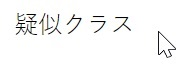
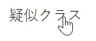
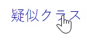
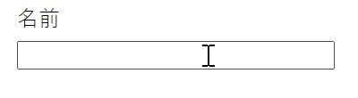
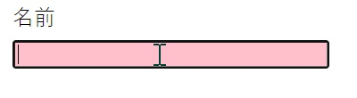

CSSの疑似クラス
疑似クラスとは
指定の要素が特定の状態である場合に、指定した要素全体に適用されるものです。
疑似クラスを使用することでユーザの操作に合わせてデザインを変化させることができます。

疑似クラスの種類
疑似クラスは、よく使用されるものからあまり使用されないものまで多くの種類があるため、ここではよく使用されるものについて記載します。
hover
要素にカーソルを合わせたときに適用される疑似クラスです。
【HTML】 疑似クラス 【CSS】 a { color: black; } a:hover { color: red; }
hover適用前
hover適用後

active
要素のクリック時、クリックし続けている時にスタイルが適用されます。
【HTML】 疑似クラス 【CSS】 a { color: black; } a:active { color: blue; }
active適用前
active適用後
focus
適用された要素が入力可能時に適用されるスタイルです。
【HTML】【CSS】 input:focus{ background-color: pink; }
focus適用前
focus適用後(フォーム枠内でクリック)
コロンの数
セレクタの書き方でコロンが1つの場合と2つの場合の使い方が存在します。
CSS3ではコロン1つで疑似クラス、コロン2つで疑似要素を意味します。CSS2では疑似要素もコロン1つで書かれていたらしいですが、CSS3からはコロンの数で疑似要素か疑似クラスか使い分けするようになったようです。

参考サイト
今回取り上げなかった疑似クラスについては、下記のリンクに記載されています。
CSS: カスケーディングスタイルシート：https://qiita.com/flatsato/items/473b4a06dd25cc700491